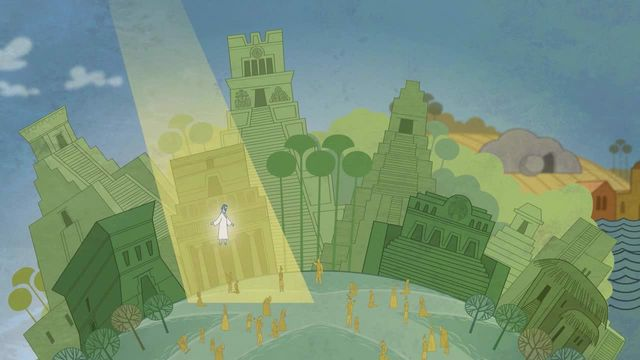
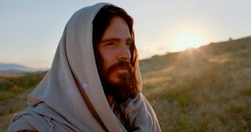

Latter-day Saints accept the Book of Mormon as scripture and call it “Another Testament of Jesus Christ.” They do not see it as a replacement for the Bible, but as an additional witness of the Savior and His gospel.
This is an independent Latter-day Saint study page. Official Church resources are linked for verification and further reading.
Watch and study
An Introduction Before You Begin Reading
The official short explainer What Is the Book of Mormon? introduces the record, its setting, and its witness of Jesus Christ. Watch for the question that matters most to you: what the book contains, why Latter-day Saints read it, or how it relates to the Savior.
Then begin with the people gathered at Bountiful in 3 Nephi 11:1-17. They hear a voice, turn their attention toward heaven, and encounter Jesus Christ. His introduction connects His identity with His suffering for the sins of the world. The people are invited to approach Him individually. How does reading this account add to the overview you just watched?
What the Book Claims to Be
The Book of Mormon presents itself as an ancient record of peoples in the Americas, written and abridged by prophets and translated by Joseph Smith through the gift and power of God. Its stated purpose is to persuade readers that Jesus is the Christ and to invite them to come unto Him.
Why It Is Called Another Testament of Jesus Christ
The book contains prophecies of Christ before His birth, teachings about His Atonement and Resurrection, and an account of the resurrected Savior appearing to people in the Americas. Jesus Christ is therefore not a side subject in the book; He is its central witness.
Does It Replace the Bible?
No. Latter-day Saints study the Old and New Testaments as scripture and cherish the Bible’s witness of Jesus Christ. The Book of Mormon is understood as a second scriptural witness that supports biblical teachings and can clarify or reinforce doctrines such as faith, repentance, baptism, resurrection, grace, and discipleship.
Why Have More Than One Scriptural Witness?
The Bible itself uses the principle that important truth can be established by multiple witnesses. Latter-day Saints see the Bible and Book of Mormon as separate records that converge on Jesus Christ. Their different histories and settings make the shared witness meaningful rather than redundant.
How a Seeker Can Approach It
The Church invites people to read the Book of Mormon, compare its teachings with the Bible, ponder its message, and pray for spiritual confirmation. The point is not simply to learn facts about a new book, but to test whether its teachings lead a reader toward Jesus Christ.
Try Reading One Account
If the book is unfamiliar, 3 Nephi 11:1-17 is a useful starting point. It tells of the resurrected Jesus appearing to a gathered people and inviting them to come forward individually. Read at your own pace, note what stands out, and keep track of your questions. You can also explore a short comparison with a Bible passage.
What Does the Invitation to Pray Include?
Moroni 10:3-5 invites readers to remember God's mercy, ponder, and ask sincerely in the name of Christ. Reading and reflection are part of that invitation. It need not become a demand to report a dramatic feeling after a single reading.
If you are uncertain, keep track of the passage or claim you want to understand. A conversation can be more helpful when you can point to the actual words. The prayer and revelation study discusses discernment and questions that take time.
Watch and study
Why Nephi Keeps Returning to Jesus Christ
In 2 Nephi 25:23-29, Nephi explains why he writes and teaches about Christ. His concern includes the next generation: he wants children to understand where forgiveness is found. Read the verbs in verse 26, then read the invitation to worship in verse 29.

The accompanying Seminary lesson explores salvation through Jesus Christ. After reading it, put Nephi's purpose into your own words. How would a family conversation change if it helped someone understand the Savior's mercy? You can begin with one experience of gratitude or one sincere question. A polished religious speech is unnecessary.
Get to Know the Book by Reading It
Study a teaching, not only the book's description
Alma 32:21-28, 37-43 uses the image of a seed to discuss faith and the patient care that follows an initial willingness to believe. The setting includes people who have been excluded from worship because of their poverty. Notice both the invitation to begin and the warning that growth requires continued nourishment. This is a religious account of developing faith; it is not a scientific experiment that establishes every historical claim about the book.
Read the gospel invitation
2 Nephi 31:5-13, 17-21 connects Jesus's example with baptism and an ongoing life of faith, hope, and love. Read this beside the account of His ministry in 3 Nephi 11 already linked above. One explains a path of discipleship; the other portrays an encounter with the risen Savior. Together they show why the book matters in Latter-day Saint worship.
Separate the questions you are asking
You may be asking what the book teaches, how it came into print, whether its account is historical, or how to evaluate a spiritual conviction. Those are related but different inquiries. Reading a passage can illuminate its message; historical questions require historical evidence too. Keep a question list so one unresolved issue does not get quietly replaced by another.
A reading note you can return to
Record a passage, its speaker and setting, one teaching in your own words, and one question. On your next visit, start with that question rather than feeling you must begin the whole book again.
A First Journey Through Three Kinds of Passage
These focusChrist study suggestions offer a way to explore the sources at your own pace.
1. Notice Christ's care for individuals
Read 3 Nephi 17:1-9, 21. Jesus recognizes that His listeners need time to understand. He invites pondering and prayer, responds with compassion to their tears, heals those brought to Him, and blesses children individually.
Write down a detail you might miss in a quick reading. As a personal application, make room for someone who needs time, attention, or help. Let the account deepen your understanding of compassion without turning its healings into a timetable for your own circumstances.
2. Follow belief into a community
Read Mosiah 18:7-10, 21-29. Alma connects baptism with caring for people who mourn or carry burdens. The community is also taught to share according to its members' resources and needs.
Consider how belonging to Christ affects ordinary relationships. Who could use company, practical help, or a patient listener? Choose a specific, freely offered act of care. The passage gives a picture of covenant life you can discuss even while other questions about the book remain open.
3. Keep an honest record of your reading
Return to one passage already studied. Write four short notes: what happens, what is taught about Christ, what you want to understand, and what you might do. Keep the chapter reference beside your notes so you can check your impressions against the text.
On another day, revisit the question that mattered most. You may want to read a surrounding chapter, compare a Bible passage, pray, or ask someone to study with you. An ongoing conversation with the text can begin before you feel ready to make a final judgment about every claim.
Where should I go when my question is historical?
Use the Book of Mormon text to understand its message, then name the historical claim you want to investigate. The Joseph Smith and Restoration study offers a route into the history. Keep textual interpretation, historical evidence, and personal spiritual conviction distinct in your notes.
Official Sources and Further Study
- The Book of Mormon: Another Testament of Jesus Christ
- How the Bible and the Book of Mormon Work Together
- Read the Book of Mormon in Gospel Library
Where would you like to go next?
Read the two books together
Try a focused comparison while preserving the context of each passage.
Explore prayer and discernment
Consider how study, prayer, agency, and uncertainty can belong in the same inquiry.
See the Savior's ministry in 3 Nephi
Pair official Book of Mormon films with their chapters and continue into Christ's care for individuals.